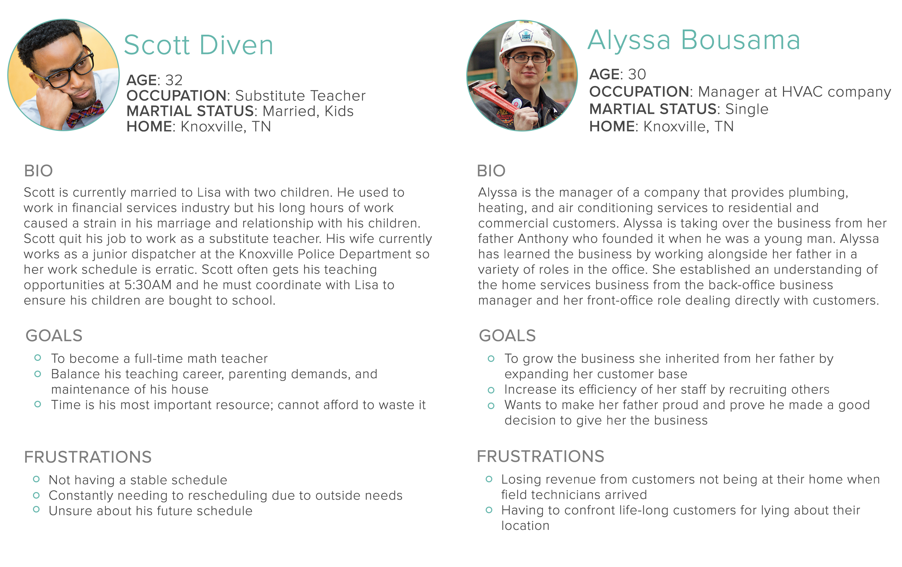
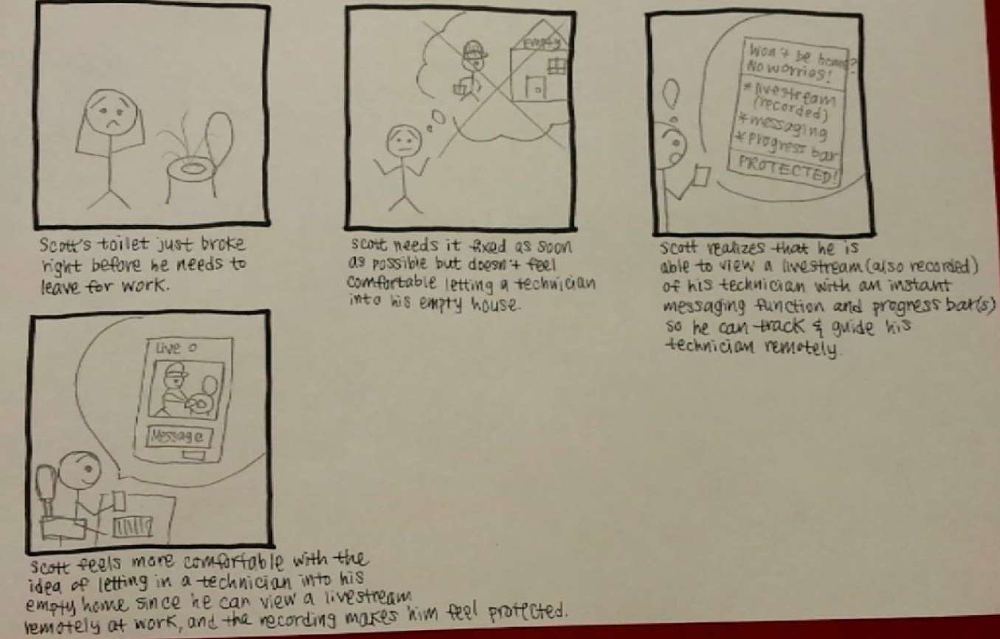

TrustyTech
A mobile app to optimize appointments with home service providers
PROJECT BACKGROUND
Businesses that provide home services such as plumbing, electrical and heating need to adapt to the changing expectations of customers. Many of the customers are dissatisfied with the service scheduling and delivery experience. Historically, scheduling a service visit to a home is done several days in advance. Customers are required to identify a day and a 4-hour “arrival window” for the service provider to visit. Some customers often wait for hours only to be told by the service provider that the technician will not be visiting their home that day. For this project, we focused on redesigning this experience to provide value for both the customers and technicians.
PERSONAS
RESEARCH APPROACH
There were a lot of these gaps in our knowledge on this topic, we conducted multiple interviews and additionally researched existing services online. To learn more about how home service providers handle/schedule their requests, we interviewed local technicians. Additionally, we interviewed students who had recently hired a home service provider to gain insights into the customer's experience.
EXPLORATORY SCENARIOS
We created 20 explanatory scenarios for our brainstorming sessions. These sceanarios helped us explore how a solution might deliver value to the two personas. Here was an example of one:
A) Problem/Context: Alyssa is fixing a toilet clog at a customer’s home but the problem turns out to be bigger than expected. She realizes she will not make it to her next appointment with Scott on time.
B) Solution: Alyssa uses an app to pass along her next appointment with Scott to an available colleague, and her colleague takes it over.
C) Resolution: Alyssa is able to finish her current customer’s request without missing/being late to her appointment with Scott.
STORYBOARDS
We narrowed down the scenarios and further developed what the experience would look like by developing storyboards and role playing the scenarios.
Value for Scott, the customer. Scott is able to take on an extra substitute job despite the unexpected heater issue. Our application frees him from the burden of having to wait around at home for a technician, which allows him to keep his schedule open and do the things that he actually wants.
Value for Alyssa, the home service provider/technician. Our application makes the employees’ jobs a lot more efficient because they no longer need to deal with customers rescheduling or cancelling appointments, or not being home at the scheduled time. They also no longer have to worry about running late to appointments.

Added value for Alyssa, the home service provider. The recorded videos may be used to train multiple new employees at once instead of having ridealongs which costs time and money.

SOLUTION
Our team created TrustyTech, a mobile application that aims to build trust between home service providers and their customers, in order to increase the comfort of unsupervised appointments. We decided to approach the problem from a different angle and focus on building trust between customers and home service providers so that we can eliminate scheduling and rescheduling problems altogether. Through enabling home service appointments without the need of customer's presence, customers no longer have to worry about being at home during long appointment windows, and technicians are able to efficiently add more jobs throughout the day. This allows both parties to be more in control of their schedules.
FEATURES
- 1. Live Stream: Allow customer to view what the technician is doing
- 2. Messaging / Chat: Technician can ask customer questions and allow them to authorize certain repairs virtually
- 3. Technician Profile: Customer can be more comfortable with the technician if they learn more about them beforehand
- 4. Progress Bar: Customer can track the different stages of the repair
Iteration 1
Iteration 2
Customer's View

Technician's View